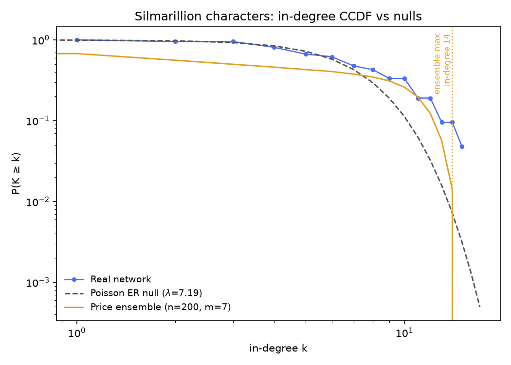
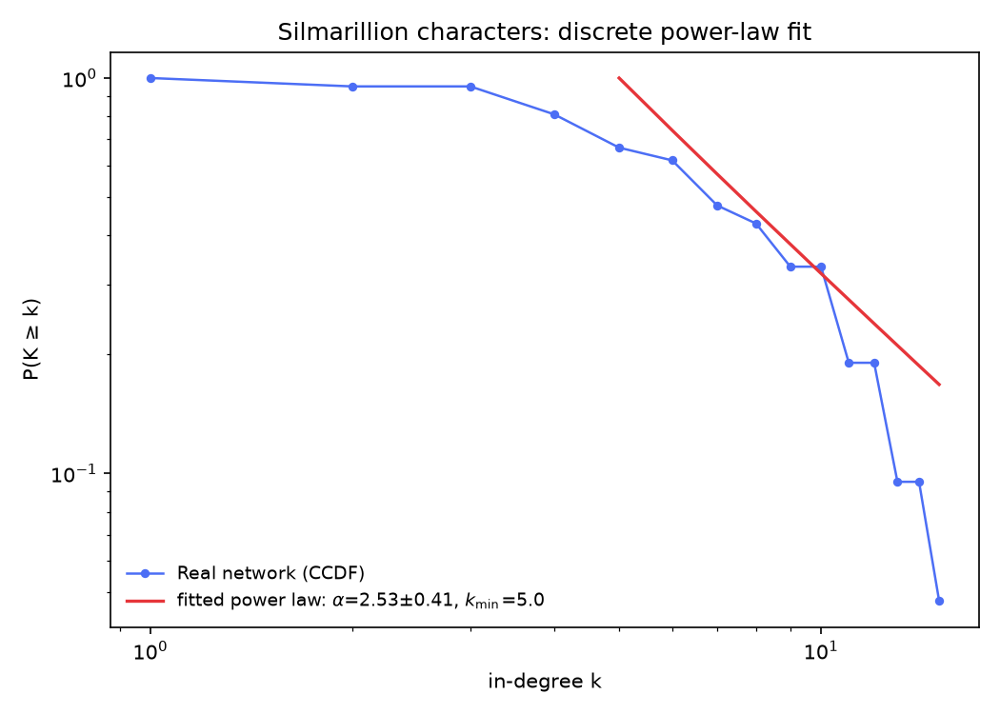

Is Morgoth an accident?
We ran the same four Week 2 tests on a smaller, colder network: the 21 characters of the Silmarillion — and the Marvel verdict mostly does not carry over.
We ran the same four Week 2 tests on a smaller, colder network: the 21 characters of the Silmarillion — and the Marvel verdict mostly does not carry over.
Week 2's Marvel post asked whether Spider-Man's extreme hub size was an accident. This page reruns exactly the same four tests on our second dataset: the 21 pages reachable in Wikipedia's Category: The Silmarillion characters (redirects resolved; crawled 2026-09-09), with 151 directed edges between them — an edge A→B when B's article appears on A's.
Before any test, the shape is different from Marvel's in one visible way: there are no gaps. No isolated characters (minimum in-degree 1, minimum out-degree 2), a single weakly connected component of all 21 nodes, and a mild but real in/out asymmetry (mean in-degree = mean out-degree = 7.19, but the ranges differ: 1–15 in, 2–12 out). The hub question looks like a rematch: Morgoth is cited by 15 of the other 20 articles — Elrond is next at 14, Eärendil and Elwing and Galadriel at 12, Fëanor at 10. Is 15 distinctive, or just what a small dense network looks like? Four questions, in the same order as the Marvel page: chance, degree-preserving chance, growth, and the individual level.
Same null as the Marvel page: an Erdős–Rényi random directed graph with the same 21 nodes and 151 edges. On Marvel's 303 nodes, chance could barely build a hub bigger than 18 (Spider-Man: 106); on 21 nodes with a mean in-degree of 7.2, chance sits close to Morgoth's league. Offline we ran 300 independent ER draws: the biggest hub's in-degree ranged from 9 to 16 (mean 11.4, sd 1.1). Morgoth's 15 is in that range — it's under the single largest draw (16) — and sits about 3.3 standard deviations above the random mean.
Draw your own random network below and watch where its biggest hub lands. Where the Marvel page returned "not a chance," this page returns more honestly: maybe. A 21-node network may not be large enough for a hub test to be informative.
Each draw independently places 151 directed edges among 21 nodes at random (no self-loops, no repeats) and plots the resulting in-degree CCDF against the real network's.
Same degree-preserving directed shuffle as the Marvel page — chains of edges a→b, b→c, c→d rewired to a→c, c→b, b→d, leaving every character's in- and out-degree exactly intact. Same two statistics, on the undirected projection (edge if either article links to the other):
Offline, 300 shuffle realizations (3,000 swaps each). Clustering's null mean was 0.6717 (sd 0.0267) — the real value sits at z ≈ −0.54, p ≈ 0.69: dead level, not one standard deviation from the null. On 21 characters whose articles cite each other densely, holding degrees fixed and re-wiring reproduces the clustering entirely. Marvel's same test returned z ≈ 14 — real relational structure beyond degree. Here, degree is the whole story. That is a real (if unromantic) finding: high-degree dwarves and kings in a small closed world make triangles by arithmetic, not lineage.
Reciprocity is the flip side — and the one thing this network genuinely wins: null mean 0.4572 (sd 0.0349) vs. real 0.6887, about z ≈ 6.6, beyond every one of the 300 shuffles (p ≈ 0). Two-thirds of the Silmarillion's citations are mutual — you link me and I link you — at a rate no degree sequence alone explains. On Marvel, degree sequence explained almost nothing of the network's actual wiring; here, it explains the clustering completely and only fails on this mutual-citation rate.
Run the same test yourself: pick a statistic, run some shuffles, and watch the null build up.
Each shuffle is a fresh copy of the real network, degree-preserving-swapped from scratch — not a running chain — matching how the offline reference numbers above were produced (with fewer swaps per realization here, for responsiveness).
As on the Marvel page, one property the shuffle can't even probe: the giant component. All 300 offline realizations left the network's component partition untouched (giant = 21, every single time, sd 0) — guaranteed by construction, since a swap rewires only along an existing chain a→b→c→d and that chain can never cross between weakly connected components. The Marvel network made that fact interesting (it has an island); the Silmarillion network has one component, so the invariance here is merely a fact about the method rather than anything about the data. That's why it isn't a toggle above: a histogram with zero variance tests nothing.
Directed preferential attachment — the Price model, same growth rule as the Marvel page: new nodes join with m outgoing links, chosen with probability proportional to the target's current in-degree. Out-degree is exactly m for every non-seed node; in-degree accumulates by preference.
At four values of m, 50 trials each. Now the comparison with Marvel turns over. On Marvel, preferential attachment at the matching m reliably overshot the real hub and no m could satisfy both the real density and hub size. Here, the trials track Morgoth closely across the plausible range: Price(m=3) max in-degree 10–17 (mean 13.1), Price(m=5) 11–16 (mean 13.9), Price(m=7) 11–14 (mean 12.9), against the real 15. Some trials land at or above Morgoth (m=3 topped out at 17; m=5 at 16), some trail below (m=9 never exceeds 12); the real hub sits comfortably inside the model's spread at all but the most extreme m. For the first hub we've tested, the growth story doesn't overshoot and isn't obviously needed either — a network this small can grow a Morgoth by chance or mellow preference alike. The one thing the growth model always gets right here is something it got wrong on Marvel: everyone joins attached to someone, and our real network indeed has no isolates at all.
Move the slider and regenerate to see for yourself.
Grows a fresh directed preferential-attachment network to n=21 nodes with the chosen m, then plots its in-degree CCDF against the real network's.
Preferential attachment depends on history: characters arrive one at a time, and each newcomer is more likely to connect to whoever's already popular, so an early lead can snowball into a hub like Morgoth. But what if the Silmarillion's cast was born all at once?
If all 21 characters existed simultaneously, there'd be no established popularity for a newcomer to follow — everyone would start with the same shot at new connections. That's the counterfactual below: a second model, the same 21 characters and roughly the same edge budget (m = 7 wires about 147 edges against the real 151), that links nodes uniformly at random instead of preferring the well-connected. It's not a claim about how the Silmarillion article network actually came to exist — it's a way of asking how much of Morgoth's hub could come from history alone.
Sequential growth adds one character at a time, wiring each newcomer's m links proportional to how connected existing characters already are (the same rule as above). Big Bang creates all 21 at once and wires the same m links per character uniformly at random — no regard for who's already connected. Switch models or click "New universe" for a fresh run; node size shows degree, and the largest hub is highlighted in gold. Hover a node (mouse only) for its name and degree.
Hover a node to see who occupies it and how connected it is in this run.
Run each model a few times at the same m. On 21 nodes the contrast between the two models is the narrowest of our six datasets: across 200 offline runs the Big Bang's biggest hub ranged 9–15 (mean 11.1) — and its top of 15 is exactly Morgoth's real in-degree, which is the chance story in miniature. Sequential growth at the same m lands higher (around 12–14, mean 12.9): close to Morgoth, but with barely any head room above him. On a stage this small, "history favored Morgoth early" and "the dice landed on Morgoth" produce nearly indistinguishable universes.
That's the deep reason this page's hub question stays genuinely open: at n=21, both generative stories and plain chance all reach Morgoth's size. What no model here can produce, though, is a character below its floor — both wire every character on arrival or at birth, and the real network indeed has no isolates to embarrass them.
Exact definitions, same as the Marvel page: take the undirected projection (a link either way counts as one connection). A character's degree is their number of distinct neighbors; their average neighbor degree is the mean degree of those neighbors. Here every one of the 21 characters has neighbors — no isolates. Averaged over the network, ⟨k⟩ = 9.43, while the edge-weighted mean neighbor degree ⟨k²⟩⁄⟨k⟩ = 10.80 — only 15% higher. Marvel's version of this gap was more than 2× (9.465 vs 22.08). The Silmarillion's is barely a paradox at all: skip the Elves and the Men and there was never anyone unlinked to gawk at — a dense closed world has a flatness everyone shares.
Individually: 14 of 21 (66.7%) have neighbors on average better connected than they are; 6 (28.6%) beat their neighborhood on their own; 1 ties. Exactly one character is never out-popularitied by any neighbor — degree ≥ every neighbor's — and it is who you'd guess: Morgoth (degree 17 on the undirected projection).
Search for a character below to see their own numbers.
Each dot is one connected character (own degree vs. average neighbor degree, log-log). The dashed diagonal marks equality: above it, your neighbors out-rank you on average; below it, you out-rank them. Click a dot or search a name.
No character selected yet — click a dot or find one above.
The same closing protocol the Marvel page used, run on the Silmarillion crawl: the in-degree
CCDF P(K ≥ k) against two nulls — an ER random graph, whose
in-degree is exactly Poisson with
λ = 151/21 ≈ 7.19, and a 200-seed
ensemble of directed Price graphs (N = 21, m = 7 —
edge-matched), with the ensemble maximum marked. A discrete power-law fit
(Clauset–Shalizi–Newman MLE, via the powerlaw package) then summarizes the tail:
exponent α̂ with its standard error, and a self-selected cutoff k̂min.


Not demonstrably non-random. Under the Poisson null, a Morgoth-sized hub isn't a freak: in-degree ≥ 15 is expected about 0.13 times per cast, and in-degree ≥ 10 is expected 3.98 times with 7 characters really there. The ER verdict from the first section survives the fancier look: at 21 nodes, chance is not rejected — and the Big Bang explorer above put a finger on it, topping out at exactly 15 in 200 runs.
Right on the Price ensemble — and the ensemble never quite reaches him. The 200-seed ensemble at m = 7 produced max in-degrees of 10–14 (mean 13.0): Morgoth's 15 sits above every one of the 200 seeds. It's a hair above — the ensemble's best is one link short — but it's the only dataset of the six where the real hub edges past the model's ceiling, which keeps "growth favored Morgoth" honest without letting it claim him.
Neither, strictly — the hardest hedge we've issued. The fit rests on just 14 tail points (k ≥ 5 of 21 cited characters), and the standard error (± 0.41) is ~16% of α̂. A network of 21 nodes structurally cannot extend its tail past 20 citations, and this one runs out of citers well before that. Whatever αˮ says about the mid-tail's shape, "scale-free" language cannot be earned from this distribution — the fit describes this crawl, not a mechanism.
What we can't conclude (for this question):
Pulling the four sections together — and the through-line is how differently the same test suite reports on a small network:
So: this time, Morgoth may well be an accident of counting — and that's the finding. The same null models that stripped Marvel's network of everything except rich-get-richer growth mostly let the Silmarillion network pass as what its degree sequence (and a strongly mutual citation habit) predicts. An honest Week 2 conclusion for this dataset: on 21 nodes, the interesting question isn't the tail — it's reciprocity.
analysis/build_week2_reference.py, run against the crawled data in
data/Silmarillion_characters/; it writes
data/Silmarillion_characters/silmarillion_week2_summary.json. The fit section's
figures and numbers come from analysis/build_week2_fit_reference.py silmarillion
(networkx + powerlaw + matplotlib in analysis/.venv), which appends the
fit key to the same JSON. Every interactive figure on this page recomputes its
own live version of the same algorithm in your browser — nothing here is hand-typed separately
from the code that produced it.